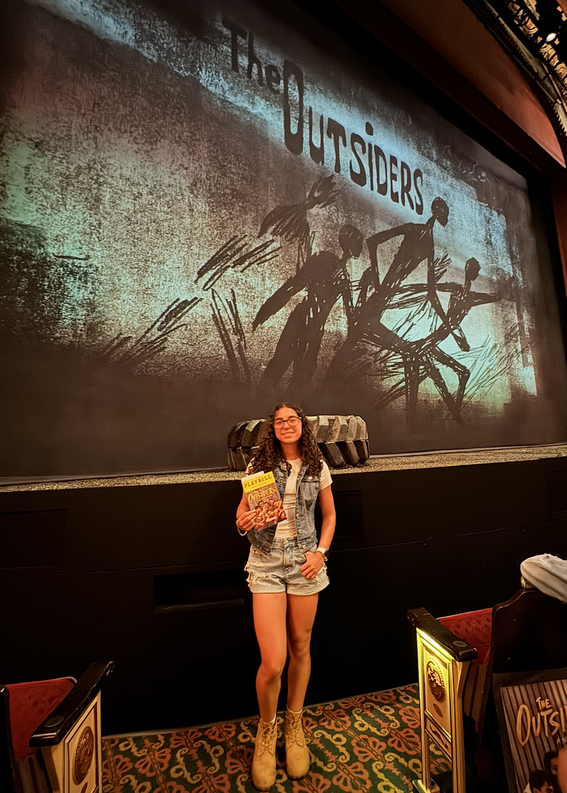
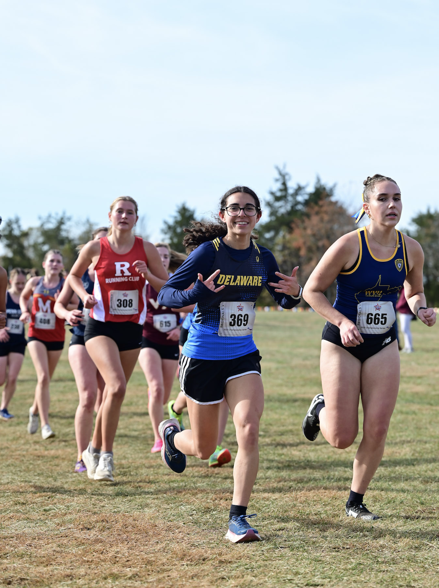
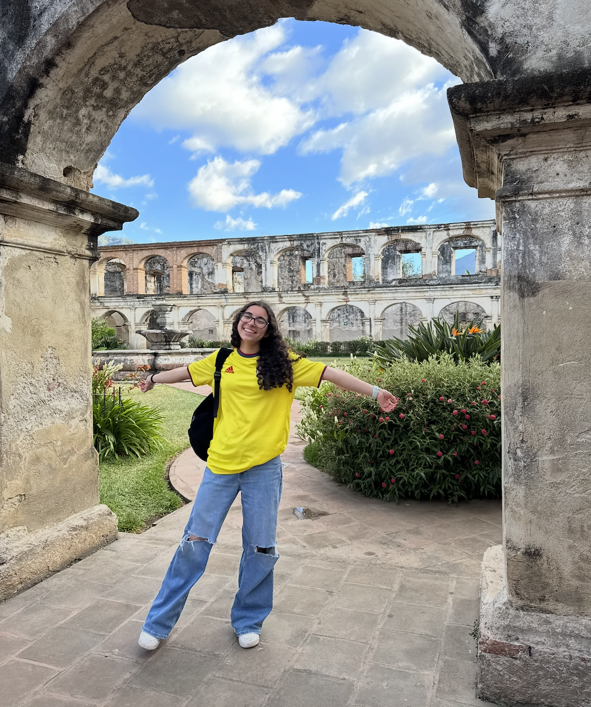

Hello hello, I’m Sam! I’m a Computer Science major who double minored in Interactive Media and Game Studies at the University of Delaware. I am someone who has always been interested in learning new things (I was one of those kids who always found school fun) and enjoy learning about a variety of different things. In other words, I’m a very jack-of-all-trades type person. Because of this, I have experience working in various areas of Computer Science. I’ve done backend work, made databases, focused on the frontend on tons of projects, and have worked part time at an IT desk where I helped students with software issues. I have also worked as a web developer for a lab as well as for a client who did blogging. It was working for this client where I learned how much I love turning someone’s imagination into reality and is what inspired me to strive for client satisfaction.
Outside of Computer Science, I love teaching myself a bunch of different skills and topics. When I was younger I would spend my free time teaching myself binary code, psychology topics, HTML, and Greek Mythology. When I’m not actively learning new lessons, you can most likely find me running, weightlifting, traveling, reading, watching Broadway shows, watching Marvel movies, or playing video games.


